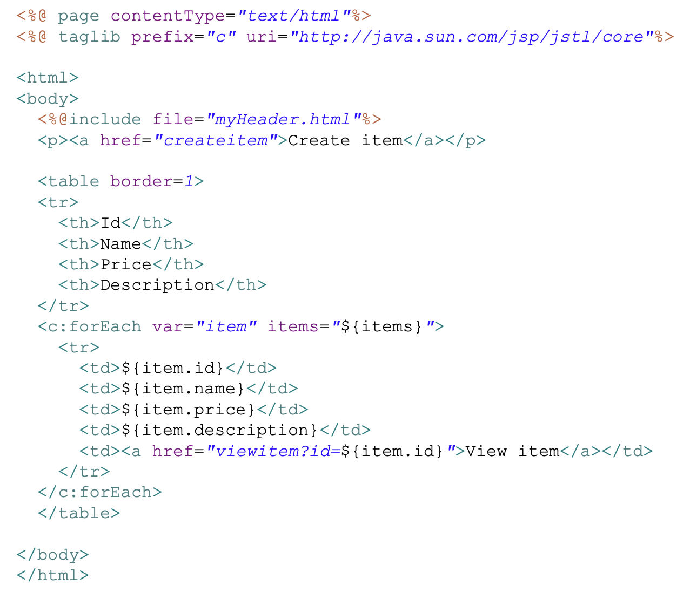
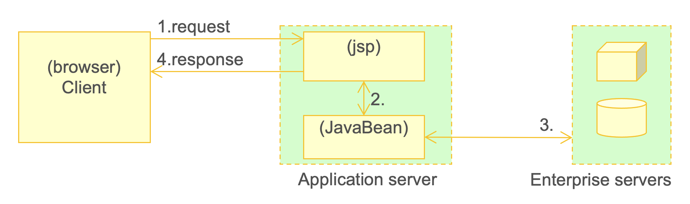
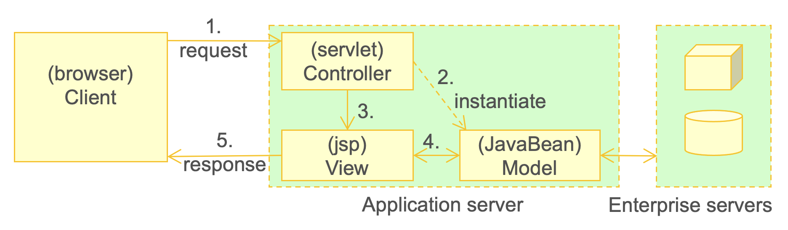
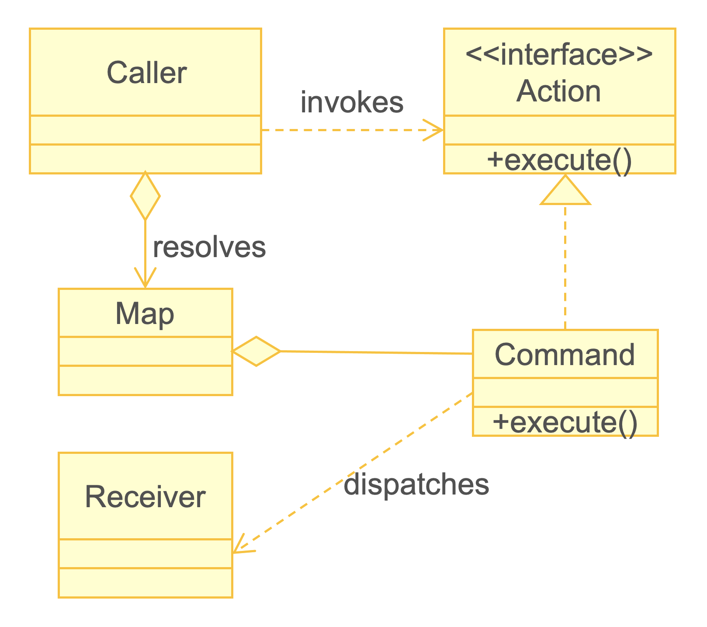
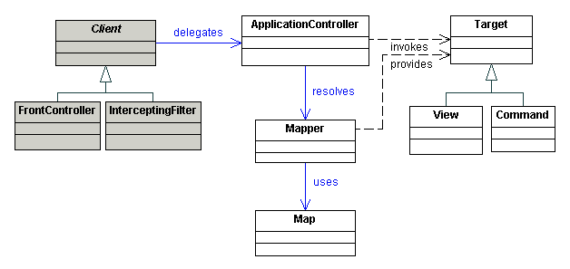
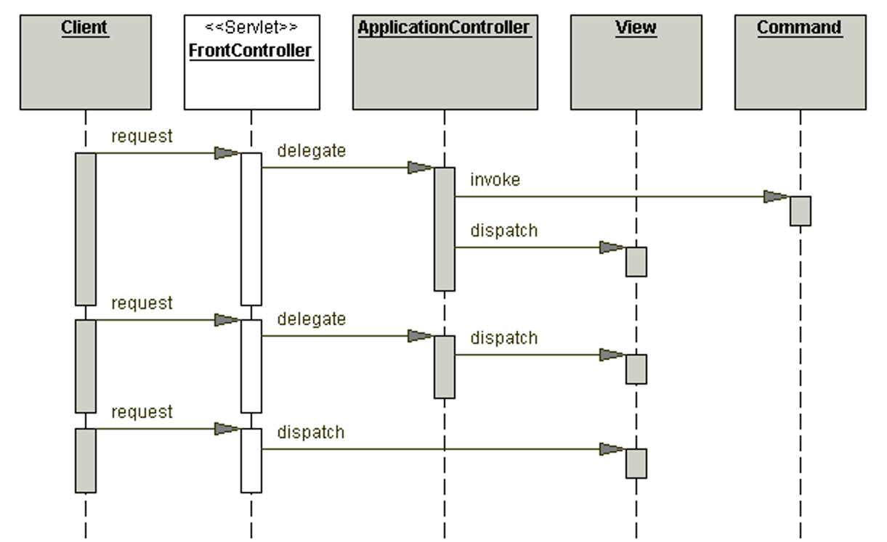

Web Development: FrontController
Created by Lasse Jenssen
(Based on material from Atle Geitung, 2021)
Agenda: Back to Web Development
- Backend Web Developement.
- More about MVC.
- More about the design pattern "FrontController".
- Design pattern: Command , Application Controller.
- FrontController with FlowManager.
- Pure J2EE Servlets (later we'll take a look at Frameworks that build on J2EE).
Syllabus for this lecture
Web-tier Archecture (Chapters to - and including - 4.4.2.1.4 Example)
Demo: demo-01-several-controllers
Smal demo applications keeping track of Inventory (Items).
Code: demo-01-several-controllers.zip (see course overview)
Model: Item
package no.hvl.dat152.model;
import java.io.Serializable;
public class Item implements Serializable {
private static final long serialVersionUID = 1L;
private String id;
private String name;
private Double price;
private String description;
public Item() {
}
public Item(final String id) {
this.id = id;
}
public Item(final String id, final String name, final Double price, final String description) {
...
}
}
Repository: interface ItemDAO
package no.hvl.dat152.repositories;
import java.util.List;
import no.hvl.dat152.model.Item;
public interface ItemDAO {
default void init() {
createItem(new Item("9991", "Item01", 1D, "Item01 Description"));
createItem(new Item("9992", "Item02", 2D, "Item02 Description"));
createItem(new Item("9993", "Item03", 3D, "Item03 Description"));
}
List< Item > findAllItems();
Item findItem(String id);
void createItem(Item item);
void updateItem(String id, Item itemdata);
String getNextId();
}
Repository: ItemDAOMemorySingleton
package no.hvl.dat152.repositories;
import java.util.*;
import no.hvl.dat152.model.Item;
public final class ItemDAOMemorySingleton implements ItemDAO {
private final List< Item > items = new ArrayList< >();
private static final Integer FIRST_INDEX = 10000;
private Integer nextId = FIRST_INDEX;
// Singleton-things
private static ItemDAOMemorySingleton instance;
private ItemDAOMemorySingleton() {}
public static synchronized ItemDAOMemorySingleton getInstance() {
if (instance == null) {
instance = new ItemDAOMemorySingleton();
instance.init();
}
return instance;
}
...
Repository: ItemDAOMemorySingleton
...
@Override
public List< Item > findAllItems() {
return items;
}
@Override
public Item findItem(final String id) {
final int index = items.indexOf(new Item(id));
return index >= 0 ? items.get(index) : null;
}
@Override
public synchronized void createItem(final Item item) {
final int index = items.indexOf(item);
if (index == -1) {
items.add(item);
}
}
...
}
Repository: ItemDAOMemorySingleton
...
@Override
public synchronized void updateItem(final String id, final Item itemdata) {
final int index = items.indexOf(new Item(id));
if (index >= 0) {
items.get(index).setName(itemdata.getName());
items.get(index).setPrice(itemdata.getPrice());
items.get(index).setDescription(itemdata.getDescription());
}
}
@Override
public synchronized String getNextId() {
nextId++;
return nextId.toString();
}
}
Mapping: src/main/webapp/WEB-INF/web.xml
< ?xml version="1.0" encoding="UTF-8"? >
< web-app >
< servlet >
< servlet-name >ViewItemController< /servlet-name >
< servlet-class >no.hvl.dat152.controller.ViewItemController< /servlet-class >
< /servlet >
< servlet >
< servlet-name >ViewShoppinglistController< /servlet-name >
< servlet-class >no.hvl.dat152.controller.ViewShoppinglistController< /servlet-class >
< /servlet >
...
< servlet-mapping >
< servlet-name >ViewItemController< /servlet-name >
< url-pattern >/viewitem< /url-pattern >
< /servlet-mapping >
< servlet-mapping >
< servlet-name >ViewShoppinglistController< /servlet-name >
< url-pattern >/viewshoppinglist< /url-pattern >
< /servlet-mapping >
...
< /web-app >
Controller: ViewShoppinglistController
package no.hvl.dat152.controller;
...
import no.hvl.dat152.model.Item;
import no.hvl.dat152.repositories.ItemDAOMemorySingleton;
public class ViewShoppinglistController extends HttpServlet {
private static final long serialVersionUID = 1L;
@Override
protected final void doGet(final HttpServletRequest req,
final HttpServletResponse resp)
throws ServletException, IOException {
final List< Item > items =
ItemDAOMemorySingleton.getInstance().findAllItems();
req.getSession().setAttribute("items", items);
req.getRequestDispatcher("shoppinglist.jsp").forward(req, resp);
}
}
View: src/main/webapp/shoppinglist.jsp
Demo: demo-01-several-controllers
Let's run the code.
MVC: Model 1 vs Model 2
Model 1
- Decentralized and page-centric architecture
- No controller
- Map directly to the next JSP
Model 2
- Centralized architecture
- Requests goes through Controller (Servlet)
- Controller determines next view (JSP)
Web MVC: Model 1
Web MVC: Model 2
Recap: How we have done web development so far
- Used MVC in a special way: One controller per application (or page)
- Used web.xml for static dispatching av requests.
- Our earlier architecture is most simular to Model 1: decentralized.
- A little similar to Model 2: used controller Servlets and made the MVC for each use case.
Issues with this method:
- Hard to find a good location for key tasks
- General controller logic
- Checking headers and cookies
- Authentication and authorization
- Logging
- End up writing a lot of code which is bundled to and dependant on the Servlet API.
Design Pattern: FrontController
- A design pattern dealing with centralization of processing of requests and selections of views in a single component (the frontcontroller).
- The application gets a single access point where all requests go through.
- The wanted command is provided either as part of the URL, or as parameters in the request.
Examples:- http://mittdomene/minapp/front?cmd=visansatte
- http://mittdomene/minapp/front/visansatte
Implementing the FrontController
- The FrontController should be able to process many types of requests.
- First we'll look at a "simple" Front Controller
- It can, for example look like this:
if (cmd.equals ("/viewshoppinglist")) {
... Doing all the work here
} else if (cmd.equals("/viewitem")) {
... Doing all the work here
} else if ... etc. ...
Demo: demo-02-front-controller
- Same functionallity as "demo-01".
- One Controller: FrontController with if-then-else.
- Code: demo-02-front-controller.zip (see course overview).
@Override
protected final void doGet(final HttpServletRequest req, final HttpServletResponse resp)
throws ServletException, IOException {
final String cmd = req.getPathInfo();
//System.out.println("Command: " + cmd);
if (cmd.equals("/viewshoppinglist")) {
viewShoppinglist(req, resp);
} else if (cmd.equals("/viewitem")) {
viewItem(req, resp);
} else if (cmd.equals("/updateitem")) {
updateItemForm(req, resp);
} else if (cmd.equals("/updateitemsave")) {
updateItemSave(req, resp);
} else if (cmd.equals("/createitem")) {
createItemForm(req, resp);
} else if (cmd.equals("/createitemsave")) {
createItemSave(req, resp);
} else {
viewShoppinglist(req, resp);
}
}
@Override
protected final void doPost(final HttpServletRequest req,
final HttpServletResponse resp)
throws ServletException, IOException {
doGet(req, resp);
}
Demo: demo-02-front-controller
- Let's have a look in Eclipse.
Design Pattern: Command
- A better solution than if-elseif-else is to use a Command design pattern.
- Purpose:
- Encapsulate a command (for instance "createItem") with associated data and business logic as an object ...
- .. , and use polymorphism instead of if-elseif-else to perform the right command.
- Let us: Decouple objects that produce the commands from their consumers
Design Pattern: Command
Design Pattern: Application Controller
Design Pattern: Application Controller
Demo: demo-03-command-pattern
- Same functionallity as "demo-01".
- Applicaton Logic moved out of FrontController.
- Code: demo-03-command-pattern.zip (see course overview).
public class FrontController extends HttpServlet {
private static final long serialVersionUID = 1L;
@Override
protected final void doGet(final HttpServletRequest req,
final HttpServletResponse resp)
throws ServletException, IOException {
String cmd = req.getPathInfo();
if (cmd == null || cmd.length() == 1) {
return;
}
cmd = cmd.substring(1);
final Action action = ActionMapper.mapToAction(cmd);
action.execute(req, resp);
}
@Override
protected final void doPost(final HttpServletRequest req, final HttpServletResponse resp)
throws ServletException, IOException {
doGet(req, resp);
}
}
public interface Action {
void execute(HttpServletRequest req, HttpServletResponse resp)
throws ServletException, IOException;
}
package no.hvl.dat152.action;
import java.io.IOException;
...
public class ViewShoppingListAction implements Action {
@Override
public final void execute(final HttpServletRequest req,
final HttpServletResponse resp)
throws ServletException, IOException {
final List< Item > items =
ItemDAOMemorySingleton.getInstance().findAllItems();
req.getSession().setAttribute("items", items);
req.getRequestDispatcher("/shoppinglist.jsp").forward(req, resp);
}
}
package no.hvl.dat152.action.mapper;
import no.hvl.dat152.action.Action;
public class ActionMapperType {
private String name;
private Action action;
ActionMapperType(String name, Action action) {
this.name=name;
this.action=action;
}
public String getName() {
return name;
}
public Action getAction() {
return action;
}
}
public class ActionMapper {
private static List< ActionMapperType > actionMapperTypeList =
new ArrayList< >(Arrays.asList(
new ActionMapperType("viewshoppinglist", new ViewShoppingListAction()),
new ActionMapperType("viewitem", new ViewItemAction()),
new ActionMapperType("updateitem", new UpdateItemFormAction()),
new ActionMapperType("updateitemsave", new UpdateItemSaveAction()),
new ActionMapperType("createitem", new CreateItemFormAction()),
new ActionMapperType("createitemsave", new CreateItemSaveAction())
));
private static Map< String, ActionMapperType > mapActionType =
actionMapperTypeList.stream().collect(
Collectors.toMap(ActionMapperType::getName, Function.identity()));
public static Action mapToAction(String name) {
try {
return (Action) mapActionType.get(name).getAction();
} catch (Exception e) {
String x = "";
}
return null;
}
}
Demo: demo-03-command-pattern
- Let's have a look in Eclipse.
Demo: demo-03-command-pattern
- So ... now we have centraliced the dispatching of commands.
- But the page flow is still decentralized
(every action determines what the next page is). - Next: How to use a FlowManager to keep track of the page flow.
Demo: demo-04-front-controller-flow
- Same functionallity as "demo-01".
- FlowManager: Centralized Page Flow
- Code: demo-04-front-controller-flow.zip (see course overview).
public class ViewShoppingListAction implements Action {
@Override
public final void execute(final HttpServletRequest req,
final HttpServletResponse resp)
throws ServletException, IOException {
final List< Item > items = ItemDAOMemorySingleton.getInstance()
.findAllItems();
req.getSession().setAttribute("items", items);
req.getRequestDispatcher("/shoppinglist.jsp").forward(req, resp);
}
}
public class ViewShoppingListAction implements Action {
@Override
public final int execute(final HttpServletRequest req,
final HttpServletResponse resp)
throws ServletException, IOException {
final List< Item > items = ItemDAOMemorySingleton.getInstance()
.findAllItems();
req.getSession().setAttribute("items", items);
return Action.SUCCESS;
}
}
doGet(): from last FrontController
@Override
protected final void doGet(final HttpServletRequest req,
final HttpServletResponse resp)
throws ServletException, IOException {
String cmd = req.getPathInfo();
if (cmd == null || cmd.length() == 1) {
return;
}
cmd = cmd.substring(1);
final Action action = ActionMapper.mapToAction(cmd);
action.execute(req, resp);
}
doGet(): New FrontController
@Override
protected final void doGet(final HttpServletRequest req,
final HttpServletResponse resp)
throws ServletException, IOException {
final String cmd = getCommand(req);
final Action action = ActionMapper.mapToAction(cmd);
final int result = action.execute(req, resp);
if (result == Action.SUCCESS) {
final String nextPage = flowManager.getNextPage(cmd);
req.getRequestDispatcher(nextPage).forward(req, resp);
} else {
// ...
}
}
private String getCommand(final HttpServletRequest req) {
String cmd = req.getPathInfo();
if (cmd == null || cmd.length() <= 1) {
cmd = "";
} else {
cmd = cmd.substring(1);
}
return cmd;
}
public class FlowManager {
private final Map< String, String > pages;
public FlowManager() {
pages = new HashMap< >();
pages.put("viewshoppinglist", "../shoppinglist.jsp");
pages.put("viewitem", "../item.jsp");
pages.put("updateitem", "../updateitemform.jsp");
pages.put("updateitemsave", "../item.jsp");
pages.put("createitem", "../createitemform.jsp");
pages.put("createitemsave", "../shoppinglist.jsp");
}
public final String getNextPage(final String cmd) {
return pages.get(cmd);
}
}
Demo: demo-04-front-controller-flow
- Let's have a look in Eclipse.
Summary: Web Development: FrontController
Where are we now?
- Moved towards pure MVC - Model 2.
- FrontController Pattern: Centralized control and common logic.
- Command Pattern: Business logic in regular classes.
- FlowManager: Centralized controll of page flow.
Next